Authorize the bytes that will be written
Bind shape, dtype and exact postprocessor bytes, then recheck the same request immediately before the environment writer.
LOCAL EXECUTION CONTROL · VERIFIABLE REPLAY
A local execution boundary for robot-policy requests: bind the exact final bytes, authorize once, observe the actual writer and retain a signed replay.
Sentinel EVC Lab · LancerLSY · Personal homepage · Research overview
PRODUCT / POLICY TO EVIDENCE
Sentinel EVC runs locally between a policy integration and its writer. The native Panda profile binds the official postprocessor output and current feedback/context to an expiring, one-use permit; separate numerical and MuJoCo profiles provide their own bounded checks.
Shared logging records what components report. The control transaction decides whether this exact request may enter the writer. Sentinel retains both, and does not treat a log entry by itself as execution authority.
WHY ADD SENTINEL?
Sentinel does not replace policy inference, motion planning or visualization. It makes the last software handoff inspectable: the exact postprocessed request is authorized, consumed once against current execution context, observed at the writer and retained as independently verifiable evidence.
Bind shape, dtype and exact postprocessor bytes, then recheck the same request immediately before the environment writer.
Short TTL, one use, actual feedback, profile, context and generation prevent a permit from becoming general authority.
Separate submitted, accepted and observed cursors; verify the Ed25519-signed bundle independently; replay retained action, decision and task mesh together.
The standard-library gateway and cryptographic verifier run beside the existing ML environment. Sentinel does not require adding a ROS stack.
MEASURED AT THE WRITER
40 paired LIBERO episodes with actual official SmolVLA inference in each lane, using RTX 4090 D (24 GB). All planned cells and failures are retained.
| Injected condition | Recorded denial | Blocked / attempts | Forbidden writer calls |
|---|---|---|---|
| Changed action | ACTION_REPLACED | 10/10 | 0 |
| Changed context | CONTEXT_CHANGED | 10/10 | 0 |
| Expired permit | LEASE_EXPIRED | 10/10 | 0 |
| Permit reuse | LEASE_REPLAY | 10/10 | 0 |
| Old feedback | FEEDBACK_CHANGED | 10/10 | 0 |
| Revoked generation | GENERATION_REVOKED | 10/10 | 0 |
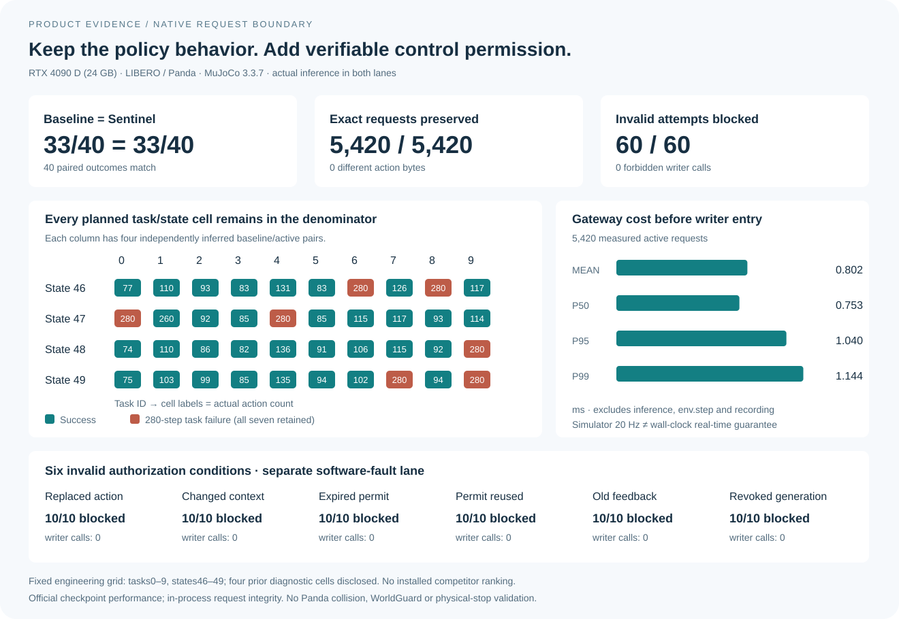
Both lanes retain the same seven task failures. The fixed grid discloses four prior diagnostic cells. The 60 faults are a separate synthetic software lane; expiry uses an injected beyond-deadline timestamp. Gateway timing excludes inference, env.step and recording. The 20 Hz simulator/replay clock is not a wall-clock real-time guarantee. This measures the execution integration, not policy improvement or installed competitor superiority.
DOCUMENTED RESPONSIBILITIES
A scoped native-baseline comparison of documented roles, not a benchmark or ranking of installed competitor products.
The native Panda profile establishes in-process request integrity only. It does not establish collision freedom, WorldGuard support, sensor truth, physical braking or task completion. Physical and numerical validation use separate declared profiles.
EXECUTION BOUNDARY / MEASURED PRODUCT CONTRACT
Sentinel owns the final action array and checks live state again when the trusted writer acknowledges entry. The same signed native record opens in task-specific 3D replay and first-difference diagnosis.
Final array → owned copy → live entry check → dispatch → signed replay
| Configuration | Valid requests executed | Invalid attempts blocked | Invalid downstream dispatches |
|---|---|---|---|
| Secure DDS transport only | 10/10 | 0/60 | 60 |
| Schema reference | 10/10 | 0/60 | 60 |
| HMAC + exact action + nonce + TTL reference | 10/10 | 30/60 | 30 |
| KineGrant 2.65.5 | 10/10 | 60/60 | 0 |
| RLSOK 1.5.12 | 10/10 | 60/60 | 0 |
| Sentinel · native gateway | 10/10 | 60/60 | 0 |
DDS secures delivery; the application gates are evaluated on the exact received records. KineGrant and RLSOK receive their strongest supported action/state bindings. All three authorization systems pass the ordinary fault grid.
Both Sentinel revisions invoke the preparation wrapper 40 times. After hardening, the 10 caller-buffer changes still execute the approved copies; feedback, context and deadline changes yield 30 entry denials and zero downstream dispatches. Competitor callback probes use different entry contracts and are retained separately.
Recorded-action software experiments. The concurrency comparison measures Sentinel revisions; it does not establish a global exclusivity, physical-safety or speed ranking.
VERIFIED EXECUTION DIFF
Compare two independently keyed VLA records in the App or CLI. Align task, state, seed and instruction; separate action, feedback, cursor, outcome and expected authorization changes.
Loading saved comparison…
This web demo displays the saved derived report and a subset of original poses. The App/CLI reverify signatures and recompute the comparison. At step 4, both recordings retain the action and camera fingerprints but no body pose; the 3D reference is explicitly step 0. Later saved poses can be inspected on the timeline.
Installed Rerun 0.38.1 CLI correctly found one unequal episode chunk. Sentinel identified step 4, camera 2, equal action and preceding feedback, then linked both source frames in the same workflow. This compares these actual workflows, without a cross-tool speed claim.
PRODUCT DEMO / NATIVE PANDA RECORD
Select a retained SmolVLA/LIBERO episode. The recorded Panda task mesh, policy action, authorization decision and controller cursors advance on the same stored 20 Hz timeline.
The viewer draws retained MuJoCo body poses and never runs new dynamics or interpolates missing poses. A permit records command integrity and authorization for that request; it is not collision validation. A rejected fault attempt is shown only from its retained attempt record and is never turned into fabricated robot motion. The source bundle was verified before publication; this browser page does not perform signature verification. Use the retained public key to independently verify the downloaded bundle.
APP / LOCAL WORKBENCH
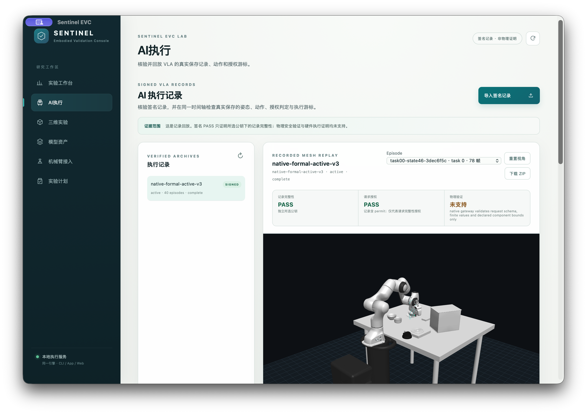
Import a signed native run with an independently selected public key. Choose a task, inspect its actual mesh, action and authorization, and export the original evidence. The App and CLI use the same local engine.
Local developer preview. The actual App imported all 40 formal episodes and its exported ZIP was independently reverified. App distribution signing/notarization is pending; the physical robot port remains read-only.
Installation and supported capabilities01 / DEMONSTRATION
02 / OVERVIEW
Robot policies produce action blocks that may be retimed, repaired, transformed between frames or spliced before execution. A verdict on the original plan does not automatically cover the resulting motion. Sentinel EVC binds the verification decision to the final action and current execution context.
The local research workbench combines final-plan checks, bounded certificate reuse with full fallback, a single writer to the controller and signed evidence. Separate research profiles evaluate UR5e motion, WorldGuard consequence prediction and SmolVLA action reconstruction on recorded SO100 data.
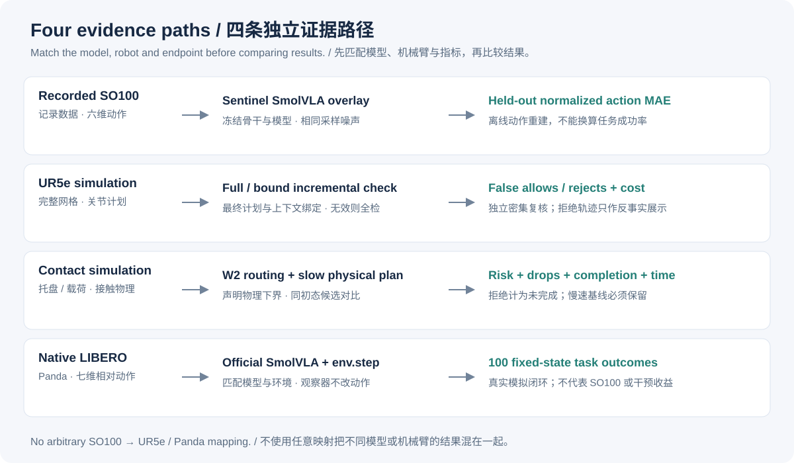
03 / METHOD
Plans, model/profile identity and current context travel together. A modified suffix, changed scene or stale observation cannot inherit an unrelated verdict.
The UR5e study reuses only a matching static prefix. Dynamic rollout always starts from frame zero; an invalid parent record triggers full validation.
Submitted, accepted and observed commands are distinct. Revocation blocks new old-generation submissions; recorded events and digests support independent verification.
The product core supports bounded numeric and fixed contact profiles. Trained neural models and the UR5e study are separate research profiles; a live robot motion adapter is not enabled.
Read the mechanism and design trace05 / LEGACY UR5E RECORDED 3D REPLAY
Follow the proposed final motion, then compare the two execution decisions.
Original UR5e visual meshes, with forward-kinematic poses from 41 saved joint states per case. No new dynamics or interpolated poses. Rejected motion is shown as a counterfactual, not dispatched motion. The examples were selected after review; collision labels describe the entire trajectory, not individual frames. The blue path follows Wrist 3, not a mounted tool. UR5e model: MuJoCo Menagerie, BSD-3-Clause.
06 / EXPERIMENTS
Select a research figure to open its full-size version. Counts and evidence scope are explained below each figure.
The protocol and source hashes were committed before formal runs. Under a declared friction floor, the long action completes 100/100 low-friction tasks; camera mismatch routes to the camera-independent state model. Unsupported mass and goal profiles still reject 300/600 roots.
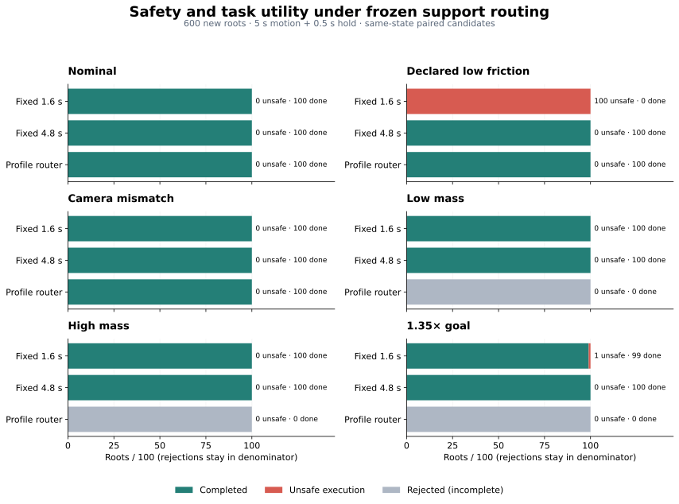
The router completes 300/600; fixed 4.8 s completes 600/600. Rejection is incomplete. Zero unsafe observations per 100-root scene has a 3.70% Wilson upper bound. Trusted profile declarations do not measure friction.
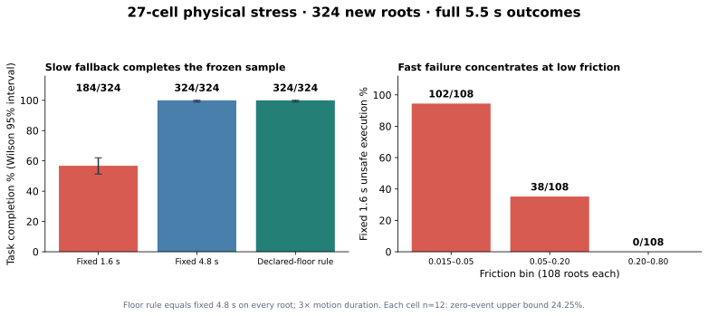
A separately frozen 27-cell stress study evaluates 324 new roots. Fixed 4.8 s completes 324/324 with no observed unsafe/drop events; 1.6 s completes 184/324 and drops 78. The floor rule equals fixed 4.8 s on every root, at 3× duration. Descriptive 95% Wilson zero-event upper bounds: aggregate 1.17%; each cell n=12: 24.25%. This does not qualify the continuous parameter domain.
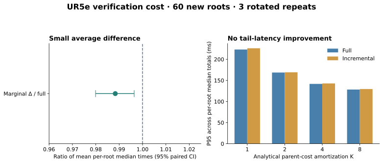
On 60 predefined UR5e roots, with obstacles independently sampled before plans, full and incremental decisions agree. Mean marginal saving is 0.996 ms; incremental P95 is worse. No tail-latency gain is claimed.
Frozen design, failures, paired results and intervalsSix scenario classes compare four policies on the same roots. A separate reviewer uses denser static sampling and 1 ms MuJoCo replay without importing the gate runner.
106 static-prefix reuses and 74 full fallbacks. Incremental validation costs 147.65 ms including the parent, versus 48.74 ms for full validation: no speedup claim. These are fixed-order observations on constructed cases, not a natural-distribution holdout or continuous collision proof.
Methods, denominators and cost accountingA 100-rollout confirmation, with source and protocol frozen before execution, succeeds in 93/100 (descriptive 95% Wilson interval 86.25–96.57%), with zero crashes. Seven 280-step failures remain: four in the top-drawer task, one each in tasks 3, 5 and 8. All 11,592 official step outcomes and unchanged environment actions were independently audited. This evaluates the official native Panda checkpoint, separately from the SO100 overlay and Sentinel intervention benefit.
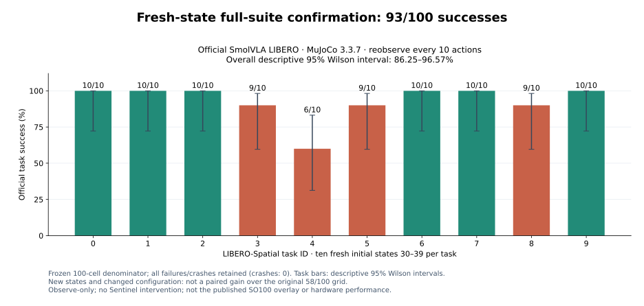
Under MuJoCo 3.8.1 with a 50-action execution horizon, the official SmolVLA LIBERO checkpoint succeeds in 58/100 fixed rollouts (descriptive 95% Wilson interval 48.21–67.20%). The bowl-on-ramekin task fails 10/10; all 42 failures reach the 280-step cap. There are 17,868 unchanged postprocessor-to-env.step actions. This measures the native official checkpoint and logging path, separately from the SO100 overlay and intervention benefit.
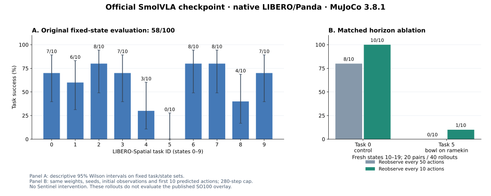
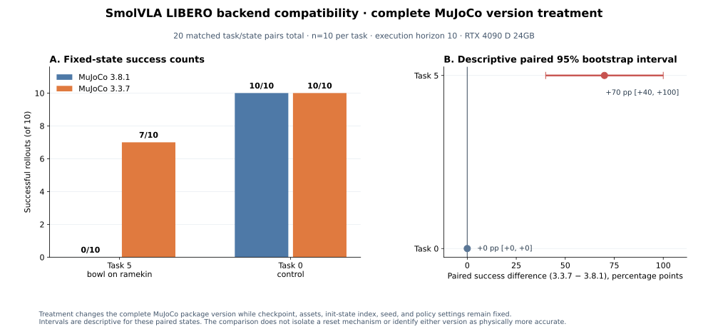
40 no-policy resets isolate MuJoCo 3.8.1 versus 3.3.7 with unchanged task files, assets and paired seeds. Task 5 bowl position differs by 35.327 mm in all 10 pairs; control mean shift is 0.688 mm. This confirms version-sensitive initial conditions, without establishing why the policy failed. The older engine is a benchmark-compatibility comparison, not more accurate physics.
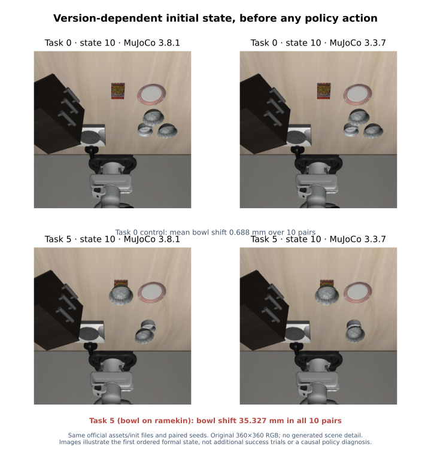
A frozen vision-language backbone with a fine-tuned action expert. The pinned base and development-selected overlay use identical sampling noise in one paired held-out evaluation.
Action reconstruction, not physical robot task success. Windows overlap; the independent unit is the episode. Dataset-native physical units are undeclared.
Action MAE / training action standard deviation
63.46% lower normalized MAE
600 fresh roots, six scenarios, four sibling plans per root. The trained state and visual ensembles keep their original calibration; difficult cases remain in the comparison.
Unsafe selections / 100 roots · lower is better
Full scenario results and uncertaintyMUJOCO PHYSICS-PROFILE FALLBACK
A separate 5 s MuJoCo profile evaluates 100 new low-friction roots. Its 4.8 s candidate has 0/100 unsafe selections and 100/100 tray endpoint tasks, at three times the 1.6 s duration.
The rule assumes μ_min = 0.015; friction is not sensed. The 3.2 s candidate was also safe in this sample but rejected by the conservative rule. Zero observed failures has a 3.70% Wilson upper bound. This profile is not deployed and does not repair the original neural gate.
Fallback rule and retained results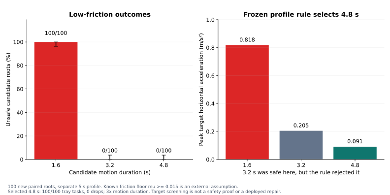
GPU measurements: RTX 4090 D (24 GB). Every chart uses retained result files, available with source hashes in the evidence download.
Download chart data + source identities08 / REPRODUCE
git clone https://github.com/LancerLSY/sentinel-evc-lab.git
cd sentinel-evc-lab
python3 -m venv .venv
source .venv/bin/activate
python -m pip install -e ".[physics]"
python -m sentinel_evc serveStart from source with Python 3.10+, or use the interactive installer to choose a core or physics profile and build the macOS App. The CLI prints the local workbench address; simulations write recorded outcomes and evidence.
GPU training uses a separate pinned environment. Model overlays require the original frozen SmolVLA base/backbone; they are not standalone policy checkpoints.
Training, calibration and evaluation commandsThe historical simulator directory checksum includes download cache. Diagnostic replay source binds official model content per file. Replay reproducibility note
The release index includes sizes and SHA-256 digests; archives contain per-file identities and licenses. Sentinel code is MIT; MIT does not grant patent rights. See the repository for upstream attribution and the core mechanism's patent notice.
Asset index and checksums09 / CITATION
Use the repository citation for the current software and simulation artifacts. A paper citation will be added alongside its arXiv record.
@misc{sentinel_evc_lab_2026,
title = {Sentinel EVC Lab},
year = {2026},
url = {https://github.com/LancerLSY/sentinel-evc-lab},
note = {Research software and simulation evidence}
}